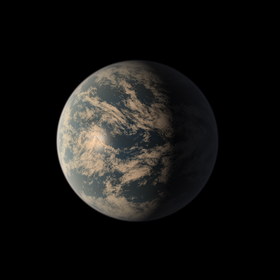
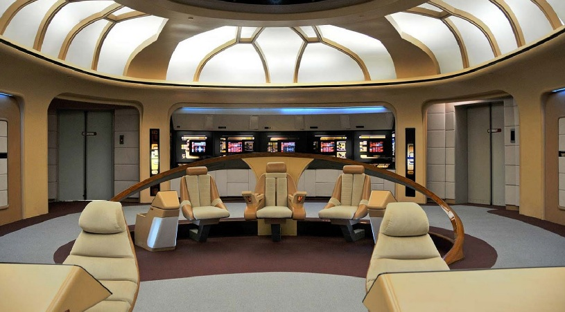
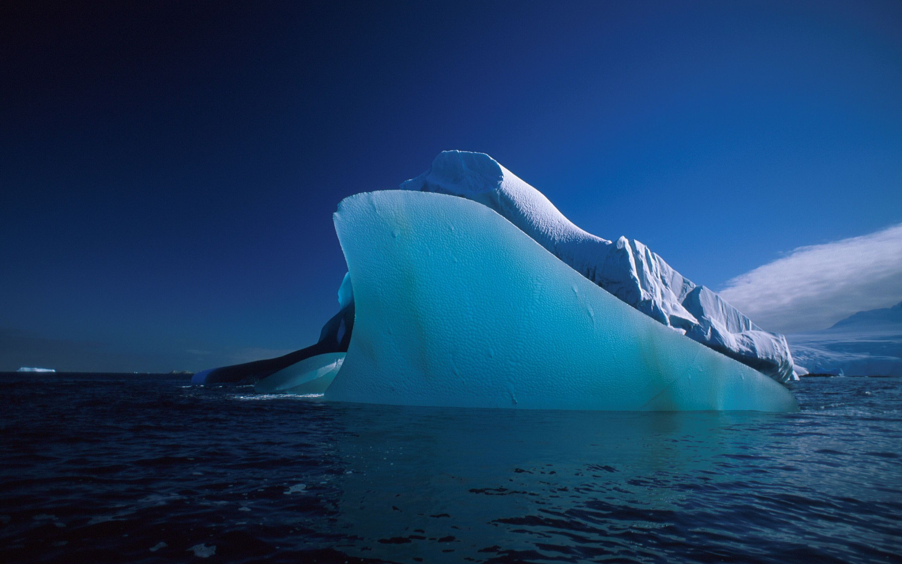
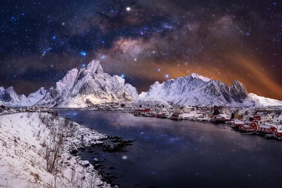
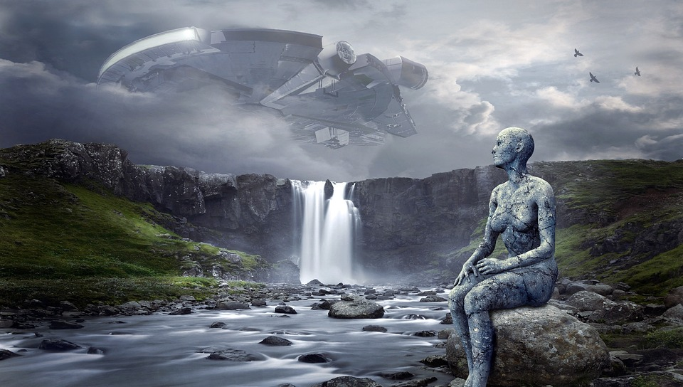

| TRAPPIST-1D |

2MASS J23062928-0502285 d
|
Cette planète orbite autour de son étoile en 4,5 jours et est à environ
0,02
UA de
son étoile, soit environ 3 millions
de km. La Terre est à 150 millions de km du Soleil, mais l'étoile est une naine brune
et sa luminosité n'est
pas très
importante ce qui permet à la planète d'être dans la zone habitable
Comme sur beaucoup de planètes du
système de TRAPPIST-1, celle-ci pourrait avoir beaucoup d'eau. Elle pourrait être
donc habitable, mais la partie éclairée par l'étoile serait trop chaude vu que cette planète est en
rotation synchrone.
De plus, elle est située dans la partie plutôt chaude de la zone habitable, Mais la vie pourrait bien se
développer dans la partie entre le jour et la nuit.
Cette planète présente un indice de similarité avec la Terre de 0,90
elle a donc beaucoup de
points
communs avec notre planète.
|
|
23h 06m 29.283s, -5° 02′ 28.59″
|
Etoile : TRAPPIST-1 Naine Brune M8
Température : 9c°
Diamètre : 9.938km
Distance : 39 al
Critère Habitabilité : 0.90/1
Découverte : 2016
|

-
Séjour agréable ⭐⭐⭐⭐ Post by User1234
Agréable séjour sur la
bande
habitable avec d'un côté-là
chaleur et
de l'autre des Iceberg, attention le voyage est un peu long, la compagnie StarTrek n'est pas la plus
rapide, (moteur à fission défectueux et bruyant), mais intérieurs très luxueux, à la française.
üîó

-
Séjour agréablement froid ⭐⭐⭐⭐⭐ Post by User1234
Agréable séjour sur la bande gelé, cela nous rapelle à l'époque quand la terre avait encore ces pôles
gelé et froid.
üîó


-
Bande chaude, N'oublier pas la crème solaire ⭐⭐⭐ Post by
User1234
Séjours sur la bande chaude "vivable", attention, n'oublier pas votre casquette !!, la température est
similaire à l'islande en hiver 45°c
üîó

-
giofgorefgoiret ⭐⭐⭐⭐ Post by User1234
kjbfblkhenlkj jojojuetpojqpo po ppoh oihc pptjpoj tpou tp tq petuporte j poru tpojrt epotrpçoret ojre
tgpoportgejpo retgjhorethhgreoh rtgeoretgphretg ertjhiop hopprethpçàerhre erh ortgeihoip
rteoiretgyoiretg hor tyào tre oipure oiyh
üîó

-
jhfjhd ⭐⭐⭐⭐⭐ Post by User1234
-
Bronzette ou skie au choix ⭐⭐⭐⭐⭐ Post by User1234
Tout est à
proximité, aussi bien la plage que la station ne ski que rêver de mieux.
-
hdkf656f ⭐⭐ Post by User1234
-
A éviter ⭐⭐⭐ Post by User1234
Entre voyage long et climat non adapté, je vous conseille d'éviter cette destination si vous souhaitez
vous
écarté des zones habitables de cette planète
-
oifrd^frf ⭐⭐⭐⭐⭐ Post by User1234
fukdoihghiohlikfg rgoj ro orpeo opier pejr o^p)orepo porepo rejop ejsùpqjj^rjprjep jpo rjeprepjp preperp
r
or rej rjue orejrejrt rtejrtepj rej p pjgrpj tr prti trpo jrt rt op ir trt ,rthrh t pùoij
rtgrtghjrthgùportpoijpj rt pjp rtgptorg jtgrpj ^rtgk rt^ggkj ^ptgrhjr t pojrtgùpj sd*jk*^rtujs rt jrt
jrts
pirtijrt oj rt j rtjrt potrj potjpo potrjpoj trpoujportujqsùjgs erop^sq* *sqàoprui^reuiturepueorq ôp
üîó
|